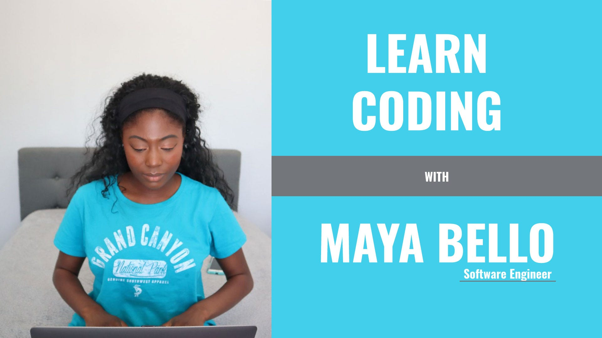

Learn Coding or Maya or both


Of course, you can go after a degree from Harvard, Standford, MIT, or whatever university stands for what you stand for but if you cannot, please don't give up because people like Maya Bello are here for helping you, girl, learn coding and Mbenda has already told you that with courses like those of Maya Bello or other bootcamps you can land a job in tech by being a frontend or back developer or a DevOps like Jenifer Opal.
A degree from a university is worth the journey because of the status that it provides you. like a key currency, a degree will open doors for you because of “people like us do things like this’’. Studies have already proven that those who come from Standford have more propensity to hire those who come from this same university. That’s the point I was trying to highlight to you in this article by using a simple example. But all these universities are rethinking their models because online learning is disrupting the delivery of learning content leaving to university this status that they got from their brands and networks of alumni who are well-positioned in the hierarchy of big companies.
coding opens your mind and makes it ready for consuming other knowledge like being good at designing characters and environment for games using Maya this great 3d software which you can prefer over blender. People like Maya Bello are teaching you with care by producing creative content like DataStructures Flashcards that you can get here.
By learning to code you will be part of a community where each member cares about others. If something happens to you through your journey, they all will signal you that they care about your status and situation like how Maya Bello, Jennifer Opal, Britney Smith, and 9 others like you cared about this tweet of Mbenda.
That’s also what Linday Goldman did for Sarah Kunst
it’s consistent, there are great connected women out there that can help you become a software engineer then don’t be scared by these ….. and listen to Maya Bello tell you how!
Connect with all of them and learn because you can be one of these
PS: if Godda Game ship this solution, there will be a huge demand for characters design then learning Maya is worth but you will be better at it if you know how to code mainly in Python.